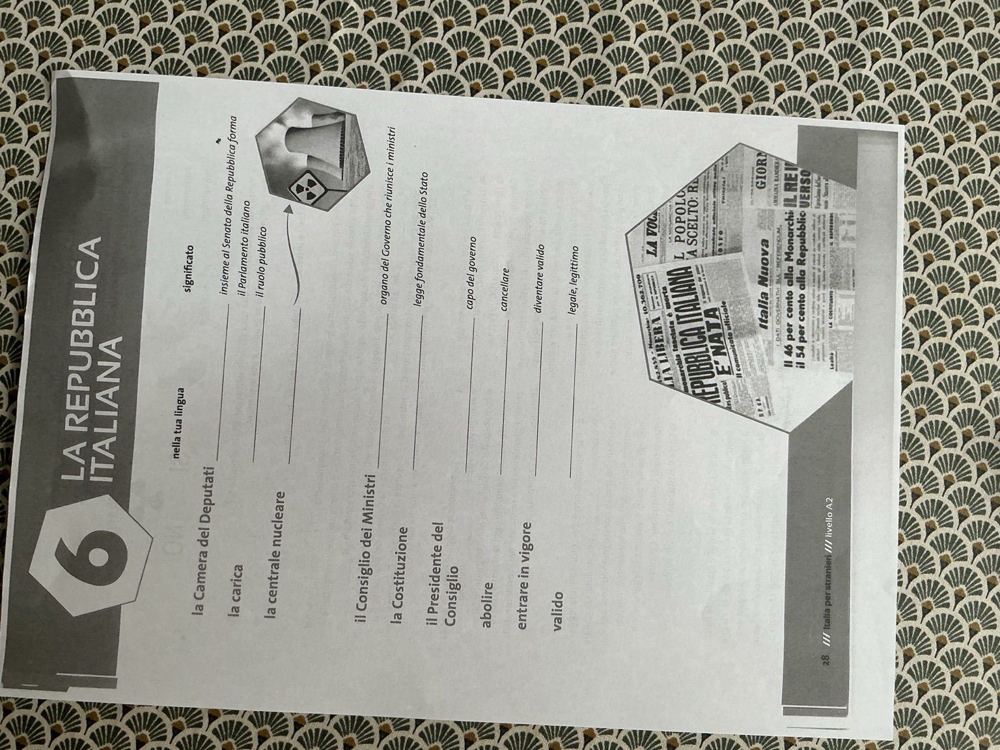
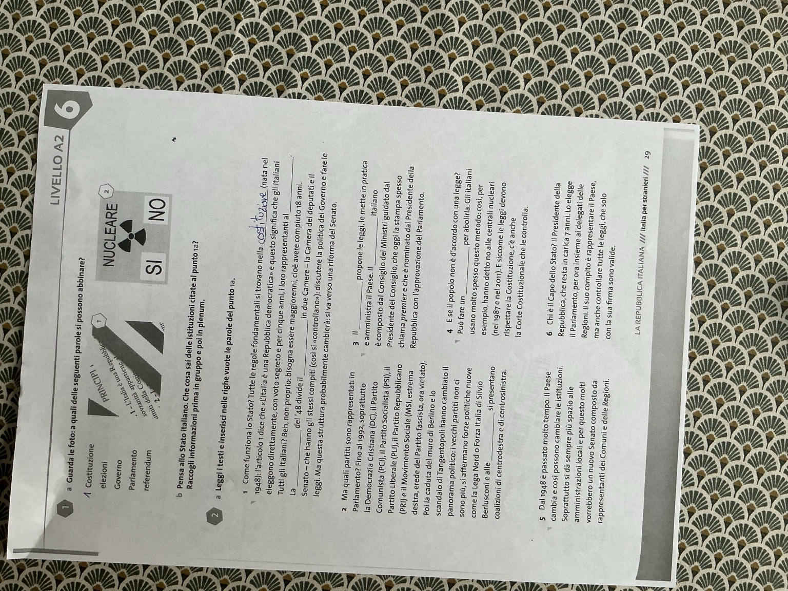
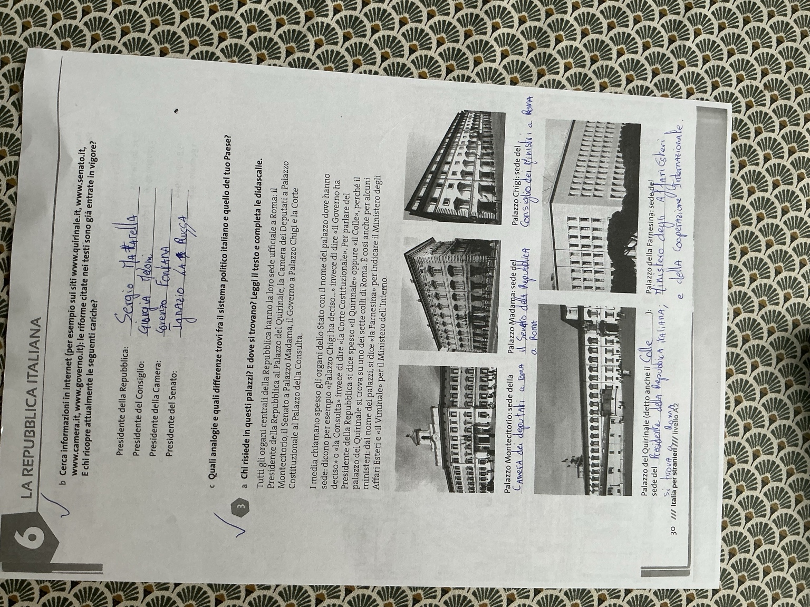
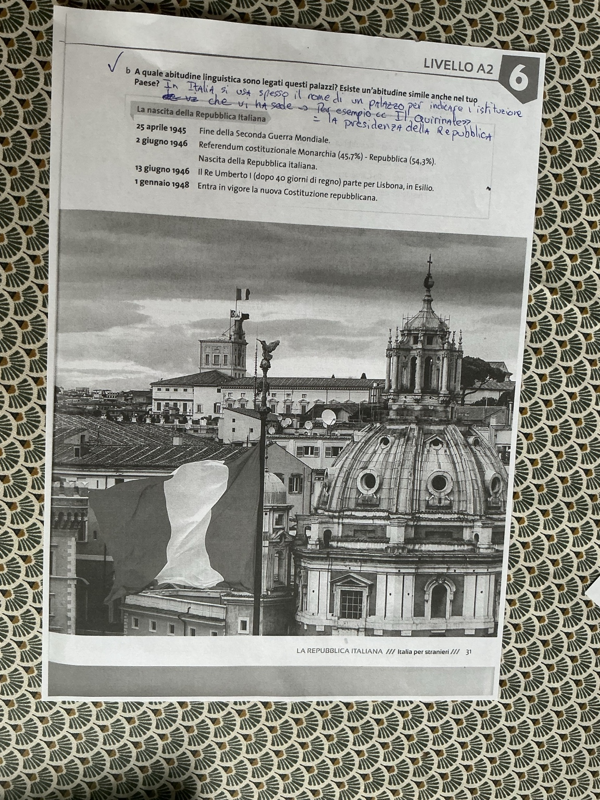

La Repubblica italiana.
Unità 6 du manuel Italia per stranieri, pages 28 à 31 : vocabulaire politique, fonctionnement de l’État, institutions nationales, palais romains et naissance de la République. Les pages 28 à 31 sont réunies ici avec leurs photos, le texte complété, les huit activités corrigées et les explications de vocabulaire.
Les quatre pages originales
Photos intégrales avec les annotations manuscrites. Ouvre une page pour la consulter, puis retrouve sa correction ci-dessous.
Page 28 — Vocabulaire politique

{kind=link}
Page 29 — Fonctionnement de l’État

{kind=link}
Page 30 — Responsables et palais

{kind=link}
Page 31 — Métonymie et chronologie

{kind=link}
Lessico — La Repubblica italiana
Le vocabulaire d’entrée de l’unité, traduit systématiquement.
| Italiano | Français | Définition donnée par le manuel |
|---|---|---|
| la Camera dei Deputati | la Chambre des députés | insieme al Senato della Repubblica forma il Parlamento italiano |
| la carica | la fonction / la charge publique | il ruolo pubblico |
| la centrale nucleare | la centrale nucléaire | — |
| il Consiglio dei Ministri | le Conseil des ministres | organo del Governo che riunisce i ministri |
| la Costituzione | la Constitution | legge fondamentale dello Stato |
| il Presidente del Consiglio | le président du Conseil / Premier ministre italien | capo del governo |
| abolire | abolir / supprimer | cancellare |
| entrare in vigore | entrer en vigueur | diventare valido |
| valido | valable / valide | legale, legittimo |
Pour la fiche : Camera dei Deputati = Chambre des députés, carica = fonction/charge publique, centrale nucleare = centrale nucléaire, Consiglio dei Ministri = Conseil des ministres, Costituzione = Constitution, Presidente del Consiglio = président du Conseil / Premier ministre, abolire = abolir, entrare in vigore = entrer en vigueur, valido = valable/valide.
Come funziona lo Stato?
Association d’images, texte à trous puis lecture de six paragraphes sur les institutions.
1a — Guarda le foto
- L’image avec « PRINCIPI » et le texte constitutionnel → Costituzione.
- L’image « NUCLEARE · SÌ / NO » → referendum.
Les autres mots proposés — elezioni, Governo, Parlamento — servent ensuite au texte de l’exercice 2.
1b — Che cosa sai delle istituzioni?
L’Italia è una Repubblica parlamentare. Ha una Costituzione, un Parlamento formato dalla Camera dei Deputati e dal Senato, un Governo guidato dal Presidente del Consiglio e un Presidente della Repubblica. I cittadini votano alle elezioni e possono partecipare anche a referendum.
2a — Completa i testi
Leggi i testi e inserisci nelle righe vuote le parole del punto 1a: Costituzione · elezioni · Governo · Parlamento · referendum.
Les mots peuvent être utilisés plusieurs fois. Les réponses ci-dessous suivent l’ordre des blancs dans chaque paragraphe.
- Costituzione · Parlamento · Costituzione · Parlamento
- elezioni
- Governo · Governo
- referendum
1. Come funziona lo Stato? Tutte le regole fondamentali si trovano nella Costituzione (nata nel 1948): l’articolo 1 dice che «L’Italia è una Repubblica democratica» e questo significa che gli italiani eleggono direttamente, con voto segreto e per cinque anni, i loro rappresentanti al Parlamento. Tutti gli italiani? Beh, non proprio: bisogna essere maggiorenni, cioè avere compiuto 18 anni. La Costituzione del ’48 divide il Parlamento in due Camere — la Camera dei deputati e il Senato — che hanno gli stessi compiti (così si «controllano»): discutere la politica del Governo e fare le leggi. Ma questa struttura probabilmente cambierà: si va verso una riforma del Senato.
2. Ma quali partiti sono rappresentati in Parlamento? Fino al 1992, soprattutto la Democrazia Cristiana (DC), il Partito Comunista (PCI), il Partito Socialista (PSI), il Partito Liberale (PLI), il Partito Repubblicano (PRI) e il Movimento Sociale (MSI, estrema destra, erede del Partito fascista, ora vietato). Poi la caduta del muro di Berlino e lo scandalo di Tangentopoli hanno cambiato il panorama politico: i vecchi partiti non ci sono più, si affermano forze politiche nuove come la Lega Nord o Forza Italia di Silvio Berlusconi e alle elezioni si presentano coalizioni di centrodestra e di centrosinistra.
3. Il Governo propone le leggi, le mette in pratica e amministra il Paese. Il Governo italiano è composto dal Consiglio dei Ministri guidato dal Presidente del Consiglio, che oggi la stampa spesso chiama premier e che è nominato dal Presidente della Repubblica con l’approvazione del Parlamento.
4. E se il popolo non è d’accordo con una legge? Può fare un referendum per abolirla. Gli italiani usano molto spesso questo metodo: così, per esempio, hanno detto no alle centrali nucleari (nel 1987 e nel 2011). E siccome le leggi devono rispettare la Costituzione, c’è anche la Corte Costituzionale che le controlla.
5. Dal 1948 è passato molto tempo. Il Paese cambia e così possono cambiare le istituzioni. Soprattutto si dà sempre più spazio alle amministrazioni locali e per questo molti vorrebbero un nuovo Senato composto da rappresentanti dei Comuni e delle Regioni.
6. Chi è il Capo dello Stato? Il Presidente della Repubblica, che resta in carica 7 anni. Lo elegge il Parlamento, per ora insieme ai delegati delle Regioni. Il suo compito è rappresentare il Paese, ma anche controllare tutte le leggi, che solo con la sua firma sono valide.
- Le projet de Sénat des collectivités décrit dans les paragraphes 1 et 5 n’est pas le système actuel. Les deux chambres votent les lois et la confiance : 400 députés et 200 sénateurs élus, auxquels s’ajoutent les sénateurs à vie.
- Le Gouvernement comprend le président du Conseil et les ministres. Le président de la République nomme le président du Conseil puis, sur sa proposition, les ministres ; le Gouvernement doit obtenir la confiance des deux chambres.
- La promulgation présidentielle ne suffit pas à expliquer l’entrée en vigueur d’une loi : elle est aussi publiée et entre normalement en vigueur quinze jours après, sauf délai différent.
Référence : Constitution italienne, articles 56, 57, 59, 70, 73, 92 et 94. Les noms de partis et les projets évoqués dans le texte sont des repères historiques.
Comprendre les six paragraphes en français
- La Constitution et le Parlement. Le texte présente les règles de l’État, le vote secret, la majorité à 18 ans et les deux chambres. La phrase sur une future transformation du Sénat décrit un projet ancien.
- Les partis. Le manuel évoque les grands partis de l’après-guerre, puis les bouleversements liés à la chute du mur de Berlin et aux affaires de corruption de Tangentopoli. Ce passage ne donne pas la liste des partis actuels.
- Le Gouvernement. Il propose des lois, les applique et administre le pays. Le président du Conseil est le chef du gouvernement ; la presse le nomme aussi premier.
- Le référendum et la Cour constitutionnelle. Un référendum abrogatif permet, dans les conditions prévues, d’abroger une loi ou une partie de loi. La Cour constitutionnelle vérifie la conformité des lois à la Constitution.
- Les collectivités. Le manuel évoque une volonté de donner davantage de place aux communes et aux régions, puis le projet ancien d’un Sénat composé de leurs représentants.
- Le chef de l’État. Le président de la République représente le pays et exerce un mandat de sept ans. Il est élu par le Parlement réuni en séance commune avec les délégués régionaux. Constitution, articles 83 et 85.
Cariche e palazzi della Repubblica
Les fonctions politiques actuelles et les sièges institutionnels de Rome.
2b — Riforme e responsabili attuali
Cerca informazioni in internet: le riforme citate nei testi sono già entrate in vigore? E chi ricopre attualmente le seguenti cariche?
No, la trasformazione del Senato descritta nel manuale non è in vigore. Il Parlamento è ancora formato dalla Camera dei deputati e dal Senato della Repubblica, che esercitano insieme la funzione legislativa. Il Governo deve avere la fiducia di entrambe le Camere.
Constitution, articles 55, 70 et 94.
| Carica | Responsabile | Source officielle |
|---|---|---|
| Presidente della Repubblica | Sergio Mattarella | Quirinale |
| Presidente del Consiglio | Giorgia Meloni | Governo italiano |
| Presidente della Camera | Lorenzo Fontana | Presidenza della Camera |
| Presidente del Senato | Ignazio La Russa | Senato della Repubblica |
Orthographe des noms à retenir : Mattarella, Meloni, Fontana, La Russa (en deux mots).
2c — Italia e Francia: analogie e differenze
La Francia e l’Italia sono entrambe repubbliche democratiche con una Costituzione e un Parlamento. In Italia il Presidente della Repubblica è eletto dal Parlamento in seduta comune con i delegati delle Regioni e ha soprattutto un ruolo di garanzia; il Governo deve avere la fiducia delle due Camere. In Francia il Presidente della Repubblica è eletto direttamente dai cittadini e ha poteri esecutivi più ampi. Anche il Parlamento francese ha due camere, ma l’Assemblée nationale ha un ruolo più forte del Sénat.
3a — Chi risiede in questi palazzi?
Tutti gli organi centrali della Repubblica hanno la loro sede ufficiale a Roma: il Presidente della Repubblica al Palazzo del Quirinale, la Camera dei Deputati a Palazzo Montecitorio, il Senato a Palazzo Madama, il Governo a Palazzo Chigi e la Corte Costituzionale al Palazzo della Consulta.
I media chiamano spesso gli organi dello Stato con il nome del palazzo dove hanno sede: dicono per esempio «Palazzo Chigi ha deciso...» invece di dire «il Governo ha deciso» o «la Consulta» invece di dire «la Corte Costituzionale». Per parlare del Presidente della Repubblica si dice spesso «il Quirinale» oppure «il Colle», perché il palazzo del Quirinale si trova su uno dei sette colli di Roma. È così anche per alcuni ministeri: dal nome dei palazzi, si dice «la Farnesina» per indicare il Ministero degli Affari Esteri e «il Viminale» per il Ministero dell’Interno.
- Palazzo Montecitorio : sede della Camera dei Deputati.
- Palazzo Madama : sede del Senato della Repubblica.
- Palazzo Chigi : sede del Governo, più precisamente della Presidenza del Consiglio dei Ministri.
- Palazzo del Quirinale (detto anche il Colle) : sede del Presidente della Repubblica.
- Palazzo della Farnesina : sede del Ministero degli Affari Esteri (aujourd’hui Ministero degli Affari Esteri e della Cooperazione Internazionale).
Deux autres correspondances du texte : Palazzo della Consulta → Corte costituzionale ; Viminale → Ministero dell’Interno. Sede signifie ici « siège d’une institution » ; risiedere ne désigne donc pas nécessairement le domicile privé de son responsable.
La nascita della Repubblica italiana
Une habitude de langue politique puis quatre dates à retenir.
3b — A quale abitudine linguistica sono legati questi palazzi?
È una metonimia: i media usano il nome del palazzo per indicare l’istituzione che vi ha sede. In Francia esiste un’abitudine simile: «l’Eliseo» per la Presidenza della Repubblica, «Matignon» per il Primo ministro, «il Quai d’Orsay» per il Ministero degli Esteri e «Bercy» per il Ministero dell’Economia.
La nascita della Repubblica italiana — cronologia
| Data | Evento del manuale | Da ricordare |
|---|---|---|
| 25 aprile 1945 | Fine della Seconda Guerra Mondiale. | Il 25 aprile commemora la Liberazione dal nazifascismo. Non è la data della fine della Seconda guerra mondiale. |
| 2 giugno 1946 | Referendum costituzionale Monarchia (45,7%) — Repubblica (54,3%). Nascita della Repubblica italiana. | Si tratta di un referendum istituzionale (scelta fra monarchia e repubblica). Il 2 giugno è la Festa della Repubblica. |
| 13 giugno 1946 | Il manuale stampa «Il Re Umberto I (dopo 40 giorni di regno) parte per Lisbona, in esilio». | Correction historique : si tratta di Umberto II, ultimo re d’Italia. Salì al trono il 9 maggio 1946 e partì in esilio il 13 giugno, dopo il referendum istituzionale. Regnò dal 9 maggio al 13 giugno, circa un mese, non 40 giorni esatti. |
| 1 gennaio 1948 | Entra in vigore la nuova Costituzione repubblicana. | La Costituzione è la legge fondamentale della Repubblica. |
Sources : Archives du Quirinal · le règne et l’exil d’Umberto II ; Rai Cultura · naissance de la République.
Les difficultés de langue du cours
Les mots et constructions utiles pour expliquer les institutions à l’oral.
| Formulation du cours | Traduction | Explication |
|---|---|---|
| l’istituzione che vi ha sede | l’institution qui y a son siège | Vi signifie « y », c’est-à-dire « dans ce palais ». Avere sede a Roma = avoir son siège à Rome. |
| si usa il nome / si usano i nomi | on utilise le nom / les noms sont utilisés | Dans cette construction avec si, le verbe s’accorde : il nome au singulier, i nomi au pluriel. |
| è eletto / è nominato | il est élu / il est nommé | Essere + participe passé : il presidente è eletto, la presidente è eletta. |
| bisogna essere maggiorenni | il faut être majeur | Bisogna reste à la 3e personne du singulier et est suivi de l’infinitif. |
| avere compiuto 18 anni | avoir 18 ans révolus | Compiere gli anni = fêter son anniversaire ; ici, avoir atteint l’âge indiqué. |
| dal Presidente / al Parlamento | par le président / au Parlement | Da + il = dal ; a + il = al. Dans è nominato dal Presidente, da introduit celui qui nomme. |
| la legge / le leggi | la loi / les lois | Legge est féminin malgré la terminaison en -e. La carica = la fonction ; la Camera = la Chambre dans ce contexte. |
In Italia si usa spesso il nome di un palazzo per indicare l’istituzione che vi ha sede. Per esempio, «il Quirinale» indica la Presidenza della Repubblica. Anche in Francia esiste questa abitudine: «l’Eliseo» indica la Presidenza della Repubblica.
En Italie, on utilise souvent le nom d’un palais pour désigner l’institution qui y siège. Par exemple, « le Quirinal » désigne la présidence de la République. Cette habitude existe aussi en France avec « l’Élysée ».
À retenir : un palazzo, l’istituzione, che vi ha sede et la Presidenza della Repubblica.
Fiche express
Les repères à pouvoir restituer sans hésiter.
- 2 giugno 1946 : referendum istituzionale, vittoria della Repubblica con il 54,3%.
- Umberto II : ultimo re d’Italia; parte in esilio il 13 giugno 1946.
- 1 gennaio 1948 : entrata in vigore della Costituzione.
- Parlamento : Camera dei Deputati + Senato della Repubblica.
- Governo : guidato dal Presidente del Consiglio; sede a Palazzo Chigi.
- Presidente della Repubblica : capo dello Stato; mandato di 7 anni; sede al Quirinale.
- Montecitorio = Camera; Palazzo Madama = Senato; Consulta = Corte Costituzionale; Farnesina = Esteri; Viminale = Interno.
Les nouveaux mots de l’Unità 6 ont été ajoutés à Italien → Vocabulaire des cours de prépa. La fiche de civilisation générale reste accessible dans Les institutions de la République.